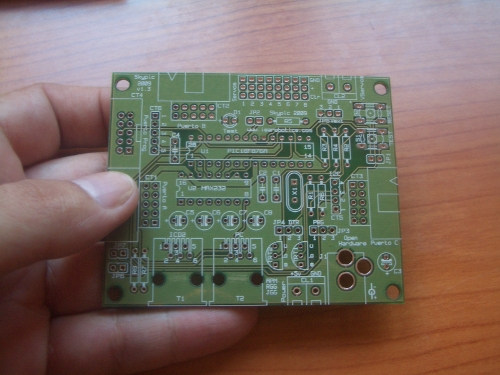
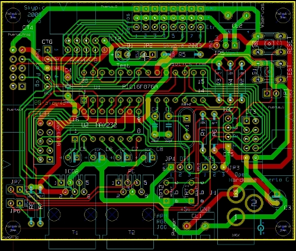

Esta semana hemos recibido la primera tirada de PCBs industriales de la tarjeta Skypic 2009. Como ya habíamos dicho en entradas anteriores, la Skypic 2009 es similar a la Skypic pero migrada al Kicad, por lo que es Hardware libre sin restricciones. Andrés la ha catalogado como Hardware libre 2, ya que es libre y está diseñada sólo con herramientas libres.

Lo siguiente es soldar un PCB para validarlo y si todo está en orden, esta versión se congelará y se colgará toda la información en la página oficial de la skypic. Ahora de momento podéis acceder al repositorio para descargar los planos. También encontraréis más fotos en este álbum.
La fabricación la hemos hecho en Elate, S.A. La tirada inicial de pruebas ha sido de 25 unidades.